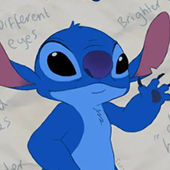
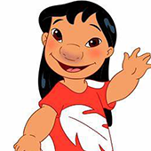
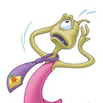
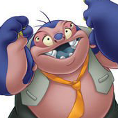

-

史迪奇
莉萝
独眼霹雳
强霸
-
•史迪奇-Stitch
史迪奇来自外星的"626号试验品"，出于邪恶的目的被创造，但它破坏欲很强，导致被流放。它破坏了关押的飞船，逃到了地球上，它伪装成流浪狗， 并被莉萝所收养，也获得了"史迪奇"(Stitch)这个名字。在与莉萝相处的日子中，渐渐的理解了什么是 'Ohana(家人)，成为了莉萝一家中的重要 伙伴。
•莉萝-Lilo
莉萝是个可爱的夏威夷小女孩。当她向流星许愿希望能有个朋友的时候，她却没有想到这颗"流星"真的是从外太空掉下来的，而且里面装着一个问题试验品。莉萝收养了这个"626号试验品"，她认为这是一只狗，并为他取名"史迪奇"(Stitch)。莉萝努力教史迪奇什么是 'Ohana (家人)，最终使它成为一家人。
•独眼霹雳-Agent Pleakley
外星人，受雇于星际联盟，原本使命是捕捉逃亡状态的非法基因实验品626，同时监管改过自新的邪恶天才强霸卓其霸，在626以史迪奇的身份变得温驯之后留在地球，寄住于丽萝家，与强霸是上下铺，扮演一个类似保姆的角色，性格温吞。
•强霸-Dr. Jumba Jookiba
强霸博士因为制造非法的基因实验生物史迪奇，而被监禁，为了得到自由，他答应成为间谍，再次抓回史迪奇。经常自称邪恶天才，他喜欢毁灭，有时以自我为中心，不过容易被感动，很好强。
|
|